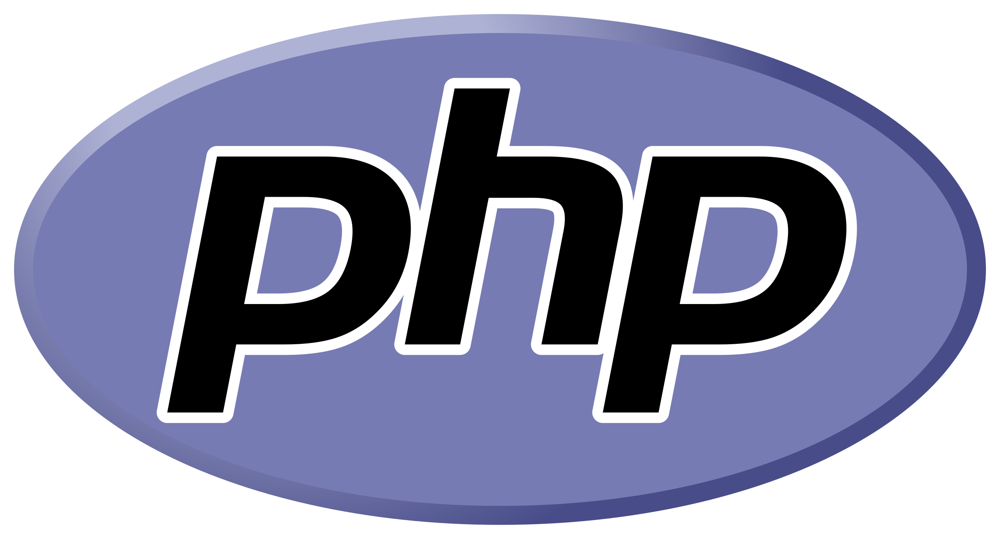

O que são Linguagens de Programação?
São conjuntos de instruções e regras sintáticas que permitem aos programadores
comunicar-se com computadores, criando softwares, aplicativos e sistemas.
C++
Características: Linguagem compilada, multiparadigma, de alto
desempenho
Aplicações: Sistemas operacionais, jogos, aplicações de alto
desempenho
Vantagens: Performance, controle de memória, portabilidade
JavaScript
Características: Linguagem interpretada, orientada a objetos, para
web
Aplicações: Desenvolvimento web front-end e back-end (Node.js)
Vantagens: Ubiquidade nos navegadores, grande ecossistema
Java
Características: Linguagem compilada para bytecode, orientada a
objetos
Aplicações: Aplicações enterprise, Android, sistemas corporativos
Vantagens: Portabilidade (Write Once, Run Anywhere), robustez
Python
Características: Linguagem interpretada, multiparadigma, sintaxe
clara
Aplicações: Data Science, IA, web, automação, scripts
Vantagens: Fácil aprendizado, código legível, vasta biblioteca
PHP

Características: Linguagem de script do lado do servidor
Aplicações: Desenvolvimento web, CMS como WordPress
Vantagens: Fácil integração com HTML, ampla adoção na web